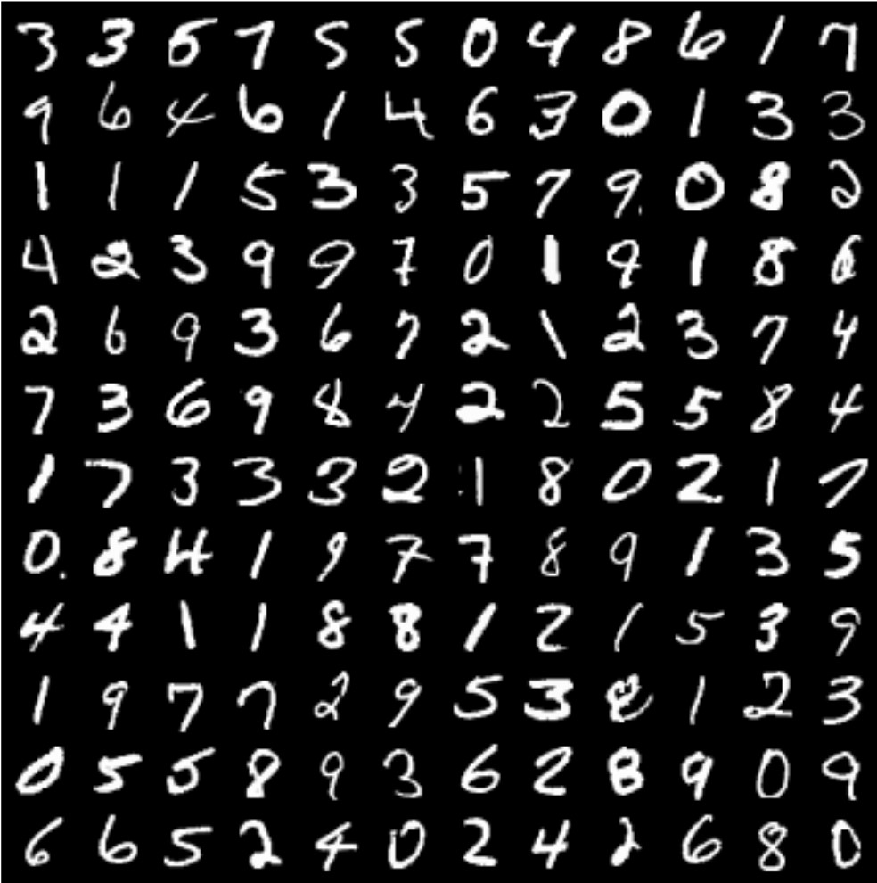
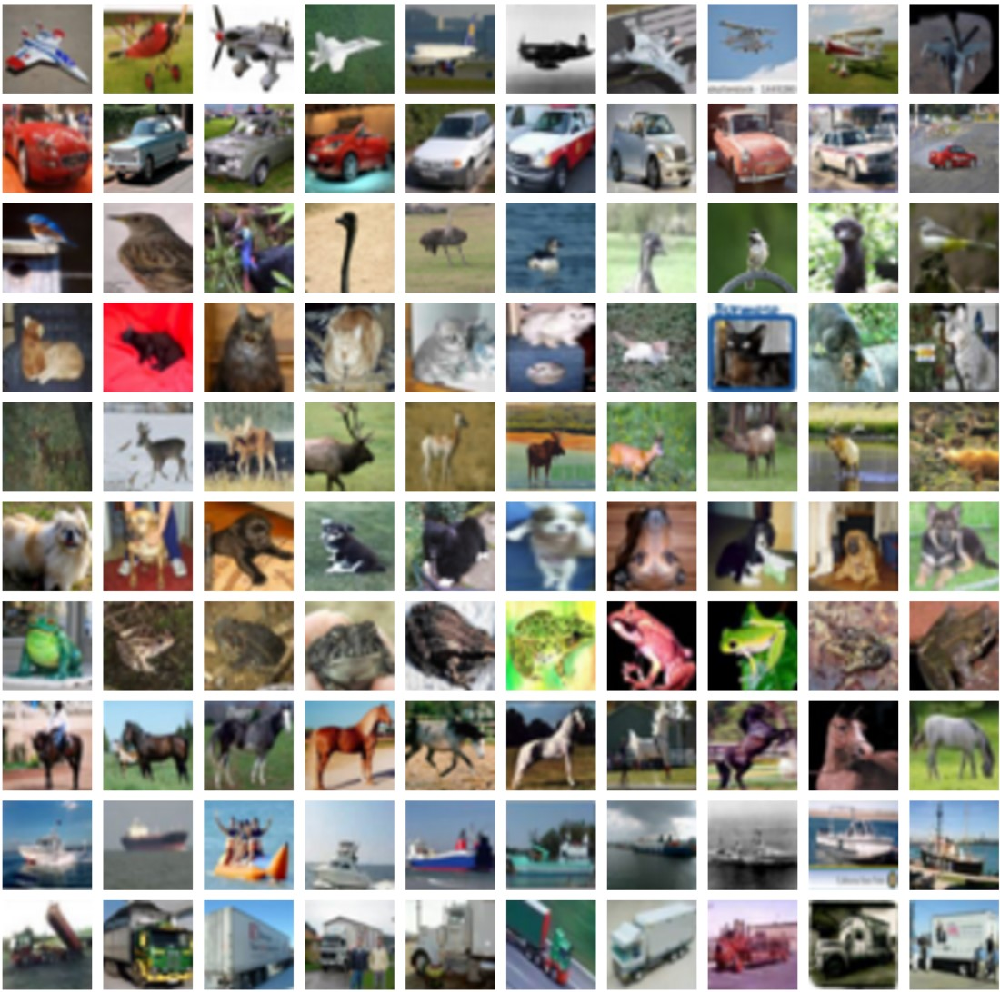
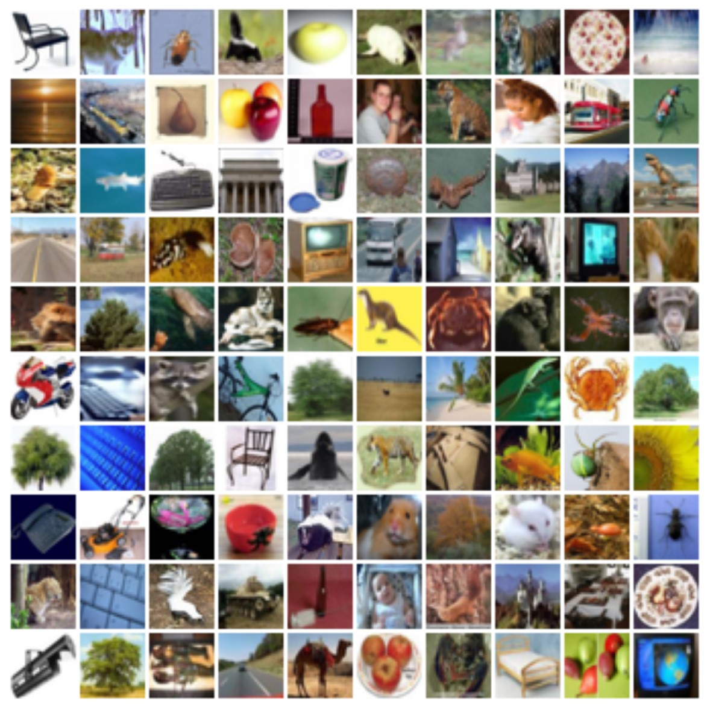
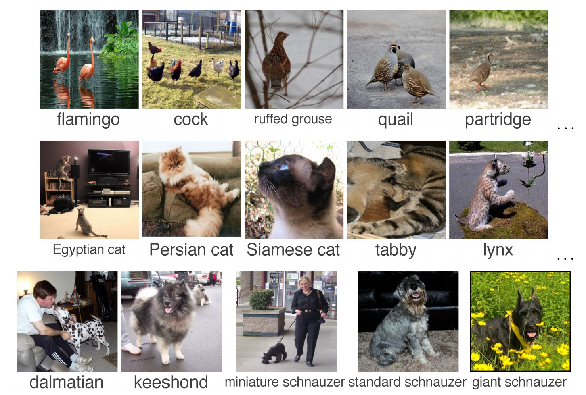
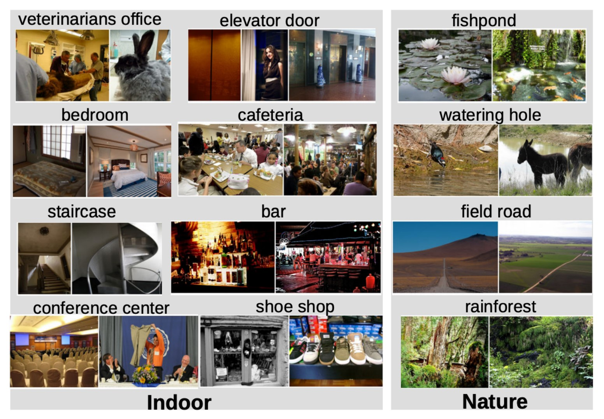
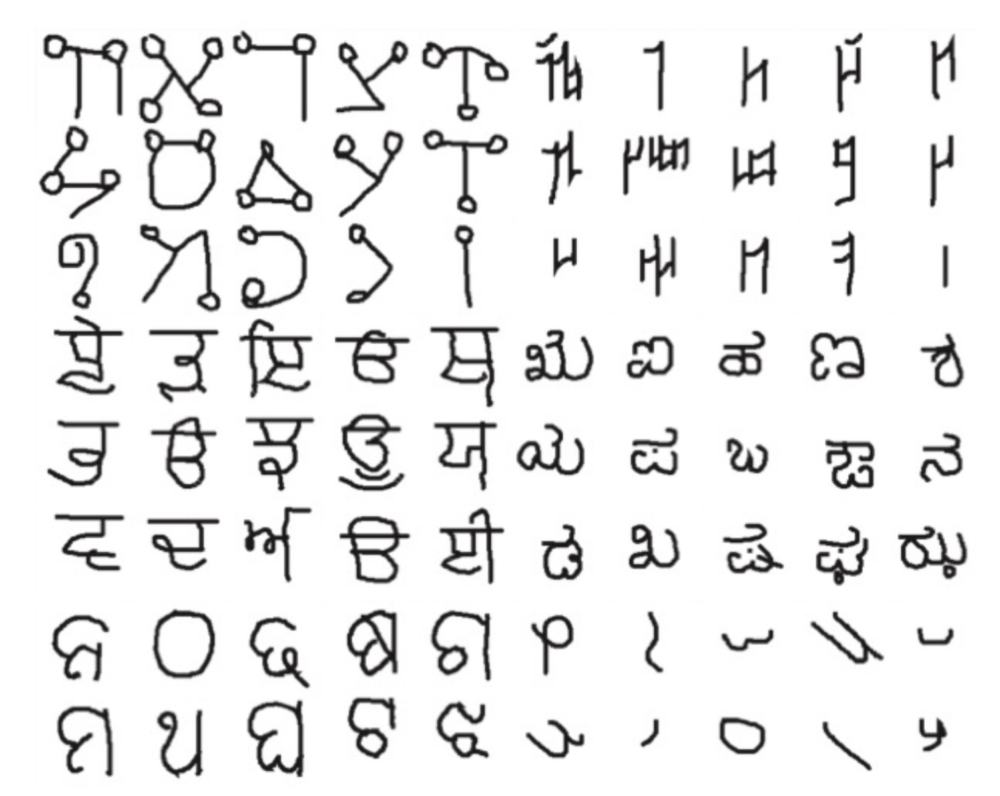

Chapter 2 图像分类 Image Classification¶
2.1 图像分类任务 Image Classification Task¶
图像分类任务是计算机视觉领域的基础任务，可作为构建很多其它任务（如对象检测、图像字幕、围棋决策等）的模块。
任务描述 Description¶
- 输入：一张图片（image）
- 输出：图片中物体的类别（category）
任务难点 Challenges¶
图像分类任务最大的问题在于语义鸿沟（semantic gap）。在计算机“眼”中，图像只是由许多像素值组成的网格，而不是人类眼中有直观意义的物体。
具体的难点包括：
- 视角变化（Viewpoint Variation）：同一物体在不同角度下的图片可能完全不同。
- 类内差异（Intraclass Variation）：同一类别物体之间可能存在明显差异。（如两个属于“猫”的样本可能长得非常不同）
- 细粒度类别（Fine-grained Categories）：同一大类下的细分类别之间可能非常相似。（如缅因猫、布偶猫、美国短毛猫等）
- 背景杂乱（Background Clutter）：图片背景可能干扰物体识别。
- 光照变化（Illumination Changes）：光照变化可能导致图片像素值变化。
- 形变（Deformation）：物体可能发生形变。（如猫可以站、坐、躺等）
- 遮挡（Occlusion）：物体可能被遮挡。
2.2 图像分类数据集 Image Classification Datasets¶
Note
机器学习是一种数据驱动方法（Data-Driven Approach）。分类器的构建步骤主要包括：
- 收集图像和标签数据集；
- 使用机器学习算法训练分类器；
- 在新的图像数据上评估评估分类器。
因而一般需要实现训练（train）和预测（predict）两个函数：
可见数据集的质量和规模对模型性能有很大影响。
以下是一些常见的图像分类数据集：

- 手写数字数据集
- 10个类别：数字 0 - 9
- 60000张训练图片，10000张测试图片
- 28 \(\times\) 28的灰度图像
- MNIST数据集小且简单，仅适合验证算法的正确性，不适合评估算法的性能。

- 10个类别：飞机、汽车、鸟、猫、鹿、狗、青蛙、马、船、卡车
- 50000张训练图片，10000张测试图片
- 32 \(\times\) 32的RGB图像

- 100个类别：20个大类别，每个大类别包含5个小类别（如树木：枫树、橡树、棕榈树、松树、柳树）
- 50000张训练图片，10000张测试图片
- 32 \(\times\) 32的RGB图像

- 1000个类别
- 约1300000张训练图片，50000张验证图片，100000张测试图片
- 图像尺寸不固定（训练时一般调整为 \(256\times 256\) 或 \(224\times 224\)）
- 2012年ILSVRC竞赛的数据集
- 因为想要精确预测图片类别非常困难，一般采用前5名准确率（Top 5 accuracy）作为性能评价指标，即模型预测5个类别，其中包含正确类别的概率。
- ImageNet是图像分类研究中最重要的数据集之一。

- 场景数据集
- 365个类别
- 约8000000张训练图片，18250张验证图片（每个类别50张），328500张测试图片（每个类别900张）
- 图像尺寸不固定（训练时一般调整为 \(256\times 256\) 或 \(224\times 224\)）

- 1623个类别：50种语言
- 每个类别仅包含20张图片
- 用于小样本学习（Few-shot Learning）研究
2.3 最近邻分类器 Nearest Neighbor Classifier¶
实现方法¶
训练¶
只需存储所有训练图像和标签即可。
预测¶
给出与预测图像最相似的训练图像的标签。
代码实现¶
这里使用L1距离（曼哈顿距离，在下一节介绍）作为距离度量：
模型特点¶
- NN分类器的正确率较低。
- 假设训练集有 \(N\) 个样本，每个样本的处理时间为常数，则NN分类器的训练时间复杂度为 \(O(1)\)，预测时间复杂度为 \(O(N)\)。这是非常坏的：我们可以负担较慢的训练时间，但希望预测时间尽可能快。
2.4 K-近邻分类器 K-Nearest Neighbor Classifier¶
在NN分类器的基础上，K-NN分类器引入一个超参数 \(K\)，表示预测时考虑的最近邻样本的数量。即在预测时，先找出与预测样本最相似的 \(K\) 个训练样本，它们各自投票给自己的类别标签，再选择票数最多的类别作为预测结果。
KNN分类器的另一个超参数是距离度量（Distance Metric），用于衡量两个样本之间的相似度。
超参数（Hyperparameter）
超参数（Hyperparameter）是在模型训练之前即设定好的参数，不会被训练过程改变。超参数的选择可能影响模型的性能。超参数的优化是模型设计的重要一环。
\(K\) 值的影响¶
决策边界（Decision Boundary）
决策边界（Decision Boundary）是不同类别区域的分界线。以二维样本空间为例，NN分类器的决策边界可能如下图所示：
- 其中每个点代表一个训练样本，点的颜色代表其类别，区域颜色代表落在该区域的样本的预测类别。
下图为 \(K=1\) 和 \(K=3\) 时可能的决策边界的对比：
- 直观上看，\(K\) 值的选择会影响决策边界的复杂度：\(K\) 越大，决策边界越平滑，离群值（outlier）对预测结果的影响越小。
Warning
若 \(K>1\)，则可能出现平票（tie）的情况（上图中的白色区域）。设计模型时需额外处理。
距离度量的影响¶
距离度量（Distance Metric）
距离度量（Distance Metric）是用于衡量两个样本之间相似度的函数。常见的距离度量函数如下：
- L1(Manhattan) Distance: \(\ d_1(I_1, I_2) = \sum\limits_p|I_1^p - I_2^p|\)
- L2(Euclidean) Distance: \(\ d_2(I_1, I_2) = \sqrt{\sum\limits_p(I_1^p - I_2^p)^2}\)
通过选择合适的距离度量函数，我们可以将KNN分类器应用于任何类型的数据。
下图为使用L1距离和L2距离时可能的决策边界对比（设 \(K = 1\)）：
- 使用L1距离时，决策边界分割线均为水平/垂直/45°直线；使用L2距离时，决策边界仍然表现为分段线性，但直线斜率可以任意。
超参数选择与测试方法¶
事实上超参数的选择需要具体问题具体分析。一般来说我们需要依次尝试不同的超参数组合，测试得出最优的超参数组合。
针对给定的数据集，确定某超参数组合之后，我们可能会想到以下几种方法来测试该组合下的表现：
将整个数据集作为训练集，仅考虑选出的超参数组合使得模型在训练集上的表现最好。
这个方法不可取。最终选出的 \(K\) 始终为 \(1\)，因为训练集=测试集，一个测试集样本最近的训练集样本就是它自己，在 \(K=1\) 时永远预测正确。
将数据集分为训练集和测试集，用训练集训练模型，用测试集评估模型性能，使得选出的超参数组合在测试集上的表现最好。
这个方法看起来解决了Idea 1的问题，但依然不可取！因为从定义上说，测试集理应是你不知道的，即模型未见过的数据。但我们把它纳入了训练超参数过程（事实上它也变成了某种训练集），让模型“看到了”测试集，依然是一种“面向答案学习”，影响了学习结果，导致我们无法评估模型在未知数据上的表现。
将数据集分为训练集、验证集和测试集，用训练集训练模型，选择超参数组合使其在验证集上的表现最好，再用测试集评估模型性能。
这个方法可取，是目前最常用的方法之一。测试集只在最后测试模型性能时跑一次，不会影响模型的训练过程。
交叉验证（Cross-Validation）：除去测试集后，将剩下的数据集分为 \(n\) 个大小相等的子集，每次取其中一个子集作为验证集，剩下的子集作为训练集，重复 \(n\) 次，最终取 \(n\) 次测试结果的平均值作为模型的性能评估。
交叉验证理论上效果最好，但计算量较大，训练成本昂贵，在小数据集上比较有用，深度学习中一般不常用。
2.5 为什么不使用KNN？ Why Not Use KNN?¶
① 预测时间复杂度高¶
上文已涉及，KNN分类器的预测时间复杂度为 \(O(N)\)，随着训练集样本数量的增加，预测时间会变得非常慢。
② 维度灾难¶
万能近似（Universal Approximation）：理论上，当训练样本数量趋近无穷时，最近邻算法可以表示任何函数。
- 绿线指示了预测结果，即选择最近的训练集样本，那么假设训练集样本密度足够大以至于覆盖整个空间，就可以拟合任何函数。
但事实上，随着维度的增加，所需的训练样本数量呈指数级爆炸增长，想要密集覆盖整个图像空间是不可能的，这称为维度灾难（Curse of Dimensionality）。
③ 原始像素上的距离不一定有意义¶
下图中右侧三张图像和左侧第一张的L2距离相同，但人眼可以明显看出右侧三张图像较大的差异：
Note
对图片原始像素用KNN不可取，但对于一些用深度卷积神经网络计算处理出的特征向量来说，KNN可能是一个不错的选择。